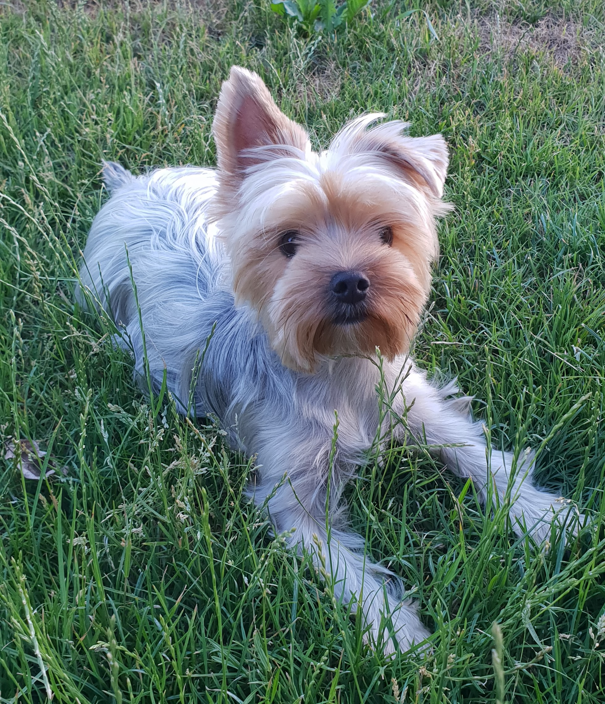
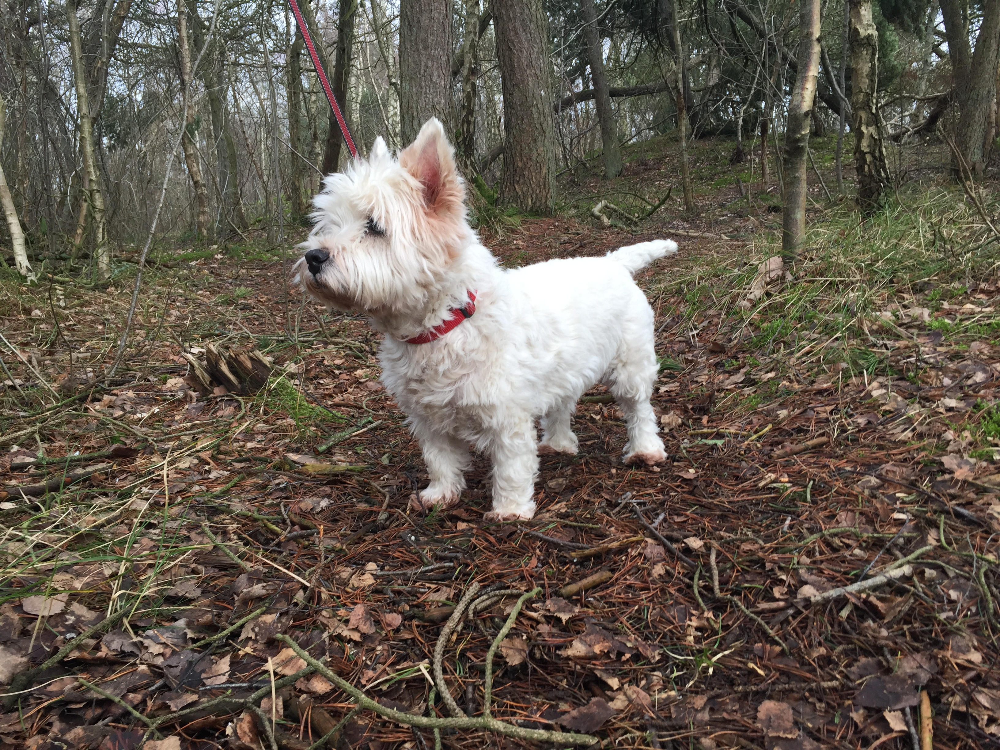

Her er nogle ofte stillede spørgsmål om mig.
Mit navn er Thomas. Jeg er 22 år og går på datamatikeruddannelsen på EASJ Næstved.
Jeg er lige startet på 3. semester hvor vi er startet med at lære om HTML.
Jeg bor i Fensmark sammen med min kæreste Ditte og vores hund.
Min hund hedder Laban, er 2 år gammel og hans race er en yorkshire terrier.
Min anden hund hedder Mille. Hende er jeg vokset op med, og hun bor hos mine forældre. Hun er 13 år gammel og en west highland white terrier.
